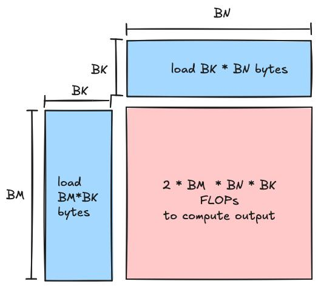
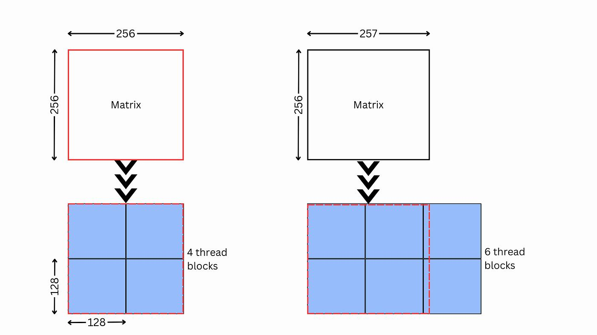

第一章：执行模型、分块与内存层级¶
学习目标：先建立统一的 GPU 心智模型，再理解 Tier 1（分块/并行映射）与 Tier 2（内存层级/访问模式）为什么决定 kernel 上限。
本章技能卡¶
| 项目 | 内容 |
|---|---|
| 对应层级 | Tier 1 + Tier 2 |
| 适合谁先读 | 刚开始学 Triton/CUDA/HIP kernel，或总觉得调参像玄学的人 |
| 读完应能回答 | 为什么 tile 过大/过小都会变慢；为什么同样的 load/store 写法带宽利用率会差很多 |
| 最重要产出 | 建立执行模型、地址表达、边界 mask、coalescing、bank conflict 的统一心智模型 |
| 不要急着追求 | 先记住某张显卡的精确缓存容量或某个“神奇参数” |
配套导航：如果你想看整套教程的阅读顺序，请先打开 学习路径-总目录。
配套资料： - 最小可运行模板集：模板 1（向量加法） - 术语表与通用坑清单
1. 本章先讲什么、后讲什么¶
很多教程一上来就开始调 BLOCK_M/BLOCK_N/BLOCK_K/num_warps，但如果读者还没真正搞清楚 线程怎么被调度、数据怎么流过寄存器/L1/SMEM/L2/HBM，后面的参数只会变成“玄学旋钮”。
本章按下面顺序展开：
- 执行模型：Thread → Warp/Wavefront → Block/Program → Grid。
- Tier 1：如何把问题映射到并行单元，为什么 tile 形状会决定上限。
- Tier 2：为什么同样做一遍 load/store，访问模式不同会差一个数量级。
2. GPU 执行模型：先把“谁在执行”讲清楚¶
2.1 四层抽象¶
从 CUDA 视角看，最常见的四层抽象是：
| 层级 | 含义 | 你需要记住什么 |
|---|---|---|
| Thread | 最小软件线程 | 每个线程处理一个或一小组元素 |
| Warp / Wavefront | 硬件调度基本单位 | NVIDIA 常见是 32 lane，AMD 常见是 64 lane |
| Block | 一组可协作线程 | 同一个 block 内可共享 SMEM/LDS、可同步 |
| Grid | 一次 kernel launch 的全部 block | 负责把整个问题铺满 GPU |
2.2 Triton 怎么对应这套模型¶
Triton 不要求你手写 threadIdx.x，而是让你更常从 program 的角度思考。
- 一个 Triton program 通常对应一块工作单元。
tl.program_id(axis=0)用来拿到当前 program 的编号。- program 内部的
tl.arange(...)表示这个 program 内部要并行处理的元素坐标。
最小可运行示意如下：
import torch
import triton
import triton.language as tl
@triton.jit
def add_kernel(x_ptr, y_ptr, out_ptr, n_elements, BLOCK_SIZE: tl.constexpr):
pid = tl.program_id(axis=0)
block_start = pid * BLOCK_SIZE
offsets = block_start + tl.arange(0, BLOCK_SIZE)
mask = offsets < n_elements
x = tl.load(x_ptr + offsets, mask=mask)
y = tl.load(y_ptr + offsets, mask=mask)
tl.store(out_ptr + offsets, x + y, mask=mask)
def add(x: torch.Tensor, y: torch.Tensor):
out = torch.empty_like(x)
n = x.numel()
grid = lambda meta: (triton.cdiv(n, meta["BLOCK_SIZE"]),)
add_kernel[grid](x, y, out, n, BLOCK_SIZE=1024)
return out
这段代码最重要的不是“加法”本身，而是三件事：
- grid 决定有多少个 program；
- 每个 program 负责一段连续数据；
- 边界必须用 mask 保护。
2.3 Warp/Wavefront 为什么重要¶
GPU 不是一个线程一个线程地独立调度，而是按更粗的单位调度：
- NVIDIA：常见是 warp = 32。
- AMD：常见是 wavefront = 64。
这意味着你写的“标量代码”，底层其实是很多 lane 在同步推进。
一个直接后果：同一个 warp/wavefront 内的分支分歧会降低效率。
错误直觉是：
“线程自己走自己的 if 分支就好了。”
更准确的理解是：
同一个 warp/wavefront 内，如果一半 lane 走 A，一半 lane 走 B，硬件往往要把两条路径都跑一遍，只是另一半 lane 在各自路径上被屏蔽。
所以分支不是不能写，而是要知道代价来自哪里。
3. Tier 1：分块、tile 和硬件利用率¶
Tier 1 要回答的是一个根问题：
你的问题到底怎样切块，才能既让每块有足够工作量，又让整个 GPU 不闲着？
3.1 用 GEMM 建立直觉¶
考虑矩阵乘：
典型做法不是让一个 block 负责整张矩阵，而是让每个 block/program 负责输出矩阵中的一个 tile：
也就是：
如果你看到这里还只是“知道公式”，但脑子里还没有形成“整张矩阵到底怎么被切成 tile、一个 tile 又怎么沿 K 维一点点累加出来”的画面，建议读完本章后立刻去看第四章 GEMM 小节里的图解版说明；那里把整个过程拆成了“整张矩阵切块 → 单个 tile 沿 K 维推进 → 数字例子 → Triton 变量对应”的完整链条。
图解：输出 tile 和 K 维 chunk 到底长什么样¶
先只抓住两件事：
- 输出空间上，
C会被切成很多个[BLOCK_M, BLOCK_N]的小块； - 每个小块的数值，又是靠 K 维很多个
[BLOCK_M, BLOCK_K] @ [BLOCK_K, BLOCK_N]的 partial GEMM 累加出来的。
下面两张图适合用来建立“输出 tile”直觉：


再看两张“沿 K 维推进”的图：


把这 4 张图和下面这句伪代码对起来看，会非常清楚：
其中：
acc对应一个固定的输出 tile；A_sub的 shape 通常是[BLOCK_M, BLOCK_K]；B_sub的 shape 通常是[BLOCK_K, BLOCK_N]；- 循环推进时变的是
k窗口，不是输出 tile 的位置。
3.2 大 tile 与小 tile 的权衡¶
情况 A：tile 太大¶
优点：
- 单个 block 计算密度高；
- 数据复用更强；
- 更容易做高效寄存器/SMEM 累加。
问题：
- block 数量太少；
- GPU 上很多 SM/CU 吃不满；
- 尤其在小矩阵或 skinny GEMM 上，经常出现“每个 block 很强，但总数不够”的情况。
情况 B：tile 太小¶
优点：
- grid 更大，更容易铺满 GPU；
- 对不规则尺寸更友好。
问题：
- 每个 block 的工作量太少；
- 循环/调度/边界开销占比上升；
- 数据复用变差，更容易从 compute-bound 退化成 memory-bound。
所以真正想找的不是“最大 tile”或“最小 tile”，而是：
让 grid 足够大，同时每个 block 仍然有足够高的 arithmetic intensity。
3.3 Occupancy 该怎么理解¶
常见定义：
但教学上更重要的是直觉：
occupancy 高，意味着当某些 warp 在等内存时，硬件更可能切到别的 warp 去干活，从而隐藏延迟。
不过也要立刻补一句：
occupancy 不是越高越好。
因为更大的 block、更多 warps、更深的流水，往往也会带来：
- 更多寄存器压力；
- 更多 SMEM 占用；
- 反而限制每个 SM 同时能驻留的 block 数量。
所以经验上你应该把 occupancy 当作 约束条件，而不是唯一目标函数。
3.4 num_warps 在 Triton 中应该怎么看¶
在 Triton 里，num_warps 不是“纯粹的软件参数”，它会影响编译器如何为这个 program 分配并行资源。
你可以把它先粗略理解成：
- 小一点：更省资源，适合寄存器重、控制逻辑复杂的 kernel；
- 大一点：更强的延迟隐藏能力，适合 memory-bound 或 load 密集型 kernel。
一个实用的起步规则：
| kernel 类型 | 起步 num_warps |
|---|---|
| 轻量 elementwise / reduce | 2 或 4 |
| 通用 GEMM | 4 或 8 |
| 小矩阵 / 小 batch | 2 或 4 |
| 已经寄存器很重的 kernel | 宁可小一点 |
不要把 num_warps 当成“越大越快”的按钮；它更像“资源-并行度平衡器”。
3.5 BLOCK_M/BLOCK_N/BLOCK_K 分别在控制什么¶
对 GEMM 而言：
| 参数 | 物理含义 | 太大时的问题 | 太小时的问题 |
|---|---|---|---|
BLOCK_M |
输出 tile 的行高 | grid 变小、寄存器/SMEM 压力上升 | 复用差、block 工作量低 |
BLOCK_N |
输出 tile 的列宽 | 同上 | 同上 |
BLOCK_K |
每次 K 维推进步长 | SMEM 压力高、尾块处理复杂 | 循环次数过多、内层开销放大 |
一个常见误区是只看 BLOCK_M/BLOCK_N，忽略 BLOCK_K。
实际上 BLOCK_K 非常关键，因为它直接影响：
- K 循环迭代次数；
- A/B tile 的加载体积；
- Tensor Core / MFMA 友好程度；
- 流水深度与 SMEM 占用。
3.6 一个正确的 GEMM 地址计算骨架¶
下面这段不是完整高性能 matmul，只是一个“地址表达正确”的骨架：
@triton.jit
def matmul_skeleton(
A, B, C,
M, N, K,
stride_am, stride_ak,
stride_bk, stride_bn,
stride_cm, stride_cn,
BLOCK_M: tl.constexpr, BLOCK_N: tl.constexpr, BLOCK_K: tl.constexpr,
):
pid_m = tl.program_id(axis=0)
pid_n = tl.program_id(axis=1)
offs_m = pid_m * BLOCK_M + tl.arange(0, BLOCK_M)
offs_n = pid_n * BLOCK_N + tl.arange(0, BLOCK_N)
offs_k = tl.arange(0, BLOCK_K)
acc = tl.zeros((BLOCK_M, BLOCK_N), dtype=tl.float32)
for k0 in range(0, K, BLOCK_K):
a_ptrs = A + offs_m[:, None] * stride_am + (k0 + offs_k[None, :]) * stride_ak
b_ptrs = B + (k0 + offs_k[:, None]) * stride_bk + offs_n[None, :] * stride_bn
a = tl.load(a_ptrs, mask=(offs_m[:, None] < M) & ((k0 + offs_k[None, :]) < K), other=0.0)
b = tl.load(b_ptrs, mask=((k0 + offs_k[:, None]) < K) & (offs_n[None, :] < N), other=0.0)
acc += tl.dot(a, b)
c_ptrs = C + offs_m[:, None] * stride_cm + offs_n[None, :] * stride_cn
tl.store(c_ptrs, acc.to(tl.float16), mask=(offs_m[:, None] < M) & (offs_n[None, :] < N))
这里最该记的是：
- A 的地址是
m * stride_am + k * stride_ak； - B 的地址是
k * stride_bk + n * stride_bn； - 累加器通常要用
fp32。
但很多人第一次看到这里，真正卡住的不是 kernel 体内，而是：host 侧到底怎么 launch？这些 stride 又是从哪里来的？
下面补一段和上面骨架一一对应的 host 侧调用代码：
import torch
import triton
def launch_matmul_skeleton(A: torch.Tensor, B: torch.Tensor):
assert A.is_cuda and B.is_cuda
assert A.ndim == 2 and B.ndim == 2
assert A.shape[1] == B.shape[0]
M, K = A.shape
_, N = B.shape
C = torch.empty((M, N), device=A.device, dtype=torch.float16)
grid = lambda meta: (
triton.cdiv(M, meta["BLOCK_M"]),
triton.cdiv(N, meta["BLOCK_N"]),
)
matmul_skeleton[grid](
A, B, C,
M, N, K,
A.stride(0), A.stride(1),
B.stride(0), B.stride(1),
C.stride(0), C.stride(1),
BLOCK_M=128,
BLOCK_N=128,
BLOCK_K=32,
)
return C
3.7 stride 到底是怎么拿到的¶
最直接的来源就是 PyTorch tensor 自己的布局信息：
对一个形状为 [M, K] 的二维张量来说：
stride(0)：行索引加 1 时，底层地址要跨过多少个元素；stride(1)：列索引加 1 时，底层地址要跨过多少个元素。
例如，若 A 是标准连续布局的 [M, K] 张量：
这正对应：
所以 host 侧把：
A.stride(0)传给stride_amA.stride(1)传给stride_akB.stride(0)传给stride_bkB.stride(1)传给stride_bnC.stride(0)传给stride_cmC.stride(1)传给stride_cn
就能让 kernel 按真实内存布局去算地址，而不是偷偷假设“所有输入都必须 contiguous”。
再看一个特别容易帮助建立直觉的例子：
A = torch.randn(M, K, device="cuda")
AT = A.t()
print(A.stride()) # 通常是 (K, 1)
print(AT.stride()) # 通常是 (1, K)
这里 AT 虽然没有复制数据，但它的 stride 已经变了；也正因为 stride 变了，kernel 只要拿到新的 stride(0) / stride(1)，地址表达仍然可以成立。
最后一定要补一句非常关键的话：
PyTorch 的
stride()单位是“元素个数”，不是字节数；而 Triton 这里的指针偏移也正是按元素步长来写的，所以两边可以直接对上。
如果你在脑子里用“字节地址”思考，也没问题，只要记得再乘上 element_size 即可：
4. Tier 2：内存层级与访问模式¶
如果说 Tier 1 决定“谁来算”，Tier 2 决定的就是“数据怎么喂进去”。
4.1 先用一条经验法则统一心智模型¶
虽然不同架构具体容量不同，但你可以先记住这个稳定结论：
所以优化原则可以写成一句话：
尽量减少从最右边的大内存重复搬运数据，尽量把热点数据留在更靠左的层级。
4.2 Coalescing：最值钱的内存常识¶
对于 global memory，最重要的基础概念就是 访问合并。
理想情况：一组连续 lane 访问一段连续地址，硬件可以合并成少量事务。
糟糕情况：lane 访问相隔很远的地址，硬件必须拆成很多事务。
用“一个 warp 读 32 个 float”来理解：
好模式¶
这是连续地址，通常容易合并。
坏模式¶
这是大步长、分散访问，事务数会上升很多。
所以很多 kernel 提速，不是因为“数学变少了”，而是因为地址布局从坏模式改成了好模式。
4.3 Shared Memory / LDS 是为了“复用”而不是“炫技”¶
SMEM（NVIDIA）或 LDS（AMD）最大的价值是：
当一块数据会被同一个 block 中的很多线程重复用时，把它先搬到片上共享存储，远比每次都从 HBM 读划算。
GEMM 是最典型的例子：
- A tile 中的一行会被多个输出元素复用；
- B tile 中的一列也会被多个输出元素复用。
如果不做 tile 级缓存，很多数据会被重复从 global memory 读取。
4.4 Bank conflict：共享存储也不是“随便读”¶
共享存储不是一个单口大数组，而是被切成很多 bank。
对 NVIDIA 常见共享存储，一个够用的近似心智模型是：
这不是让你手算每个地址，而是要知道：
- 若同一 warp 的多个 lane 同时打到同一个 bank、而且不是同地址广播，访问会串行化；
- 所以二维 tile 的布局、padding、swizzle 都可能影响性能。
矩阵转置是经典坑：
按列访问时容易出冲突，于是常见修复是：
多出这一列的意义不是“为了好看”，而是改变 bank 映射。
4.5 GROUP_SIZE_M 到底在优化什么¶
这部分最容易被讲乱，本章只保留一个统一说法。
在 Triton GEMM 中，GROUP_SIZE_M 的本质不是新的数学分块，而是：
改变 program 遍历输出 tile 的顺序，让相邻 program 更可能复用仍在 L2 里的 A 或 B 子块。
它不改变结果，不改变 FLOPs，主要改变的是：
- 哪些 tile 紧挨着执行；
- 因而哪些 global memory 访问更可能命中 L2。
你不需要死记某个固定遍历图，只要记住判断标准：
- 相邻 program 是否更倾向访问相近地址；
- 这些地址是否足够“热”，能在 L2 里撑到下一个 program 来用；
- 是否真的减少了 L2 miss / DRAM traffic。
所以 GROUP_SIZE_M 本质上是 L2 locality 调度参数。
4.6 num_stages 是在做什么¶
在带流水的 kernel 里，num_stages 可以理解成“提前准备后续 tile 的深度”。
直觉上：
- 更大
num_stages：更强的 load/compute 重叠潜力； - 代价：更多中间缓冲、更多 SMEM 压力；
- 因此不是越大越好。
对初学者最有用的结论是：
num_stages优化的是流水重叠；BLOCK_*优化的是分块；num_warps优化的是资源-并行度平衡。
它们解决的是不同维度的问题，不能混成一个旋钮看。
5. NVIDIA 与 AMD：哪些地方要立即警觉¶
5.1 立刻要记住的差异¶
| 维度 | NVIDIA | AMD | 对调参的影响 |
|---|---|---|---|
| 执行粒度 | Warp 32 | Wavefront 64 | 同样的并行配置在 AMD 上常更吃资源 |
| 共享存储命名 | SMEM | LDS | 原理类似，细节不同 |
| 矩阵指令 | Tensor Core / WMMA / WGMMA | MFMA | Tile 友好尺寸不同 |
| 性能工具 | Nsight Compute / Nsight Systems | rocprof / Omniperf | 指标名字不同，但分析逻辑相通 |
5.2 不要在文档里写死“某参数跨平台通吃”¶
例如：
- 同样的
num_warps=4，在两边的资源含义可能并不相同； - 某个
BLOCK_K在 NVIDIA 很好，在 AMD 可能压根不友好； - 某些异步加载能力、cluster 级协作能力，本来就是架构专属。
所以正确表述应该是：
先讲原理，再给平台注记，再留 autotune 搜索空间。
而不是：
“这个参数在两边都是最佳实践。”
6. 本章常见误区¶
误区 1：occupancy 低 = 一定有问题¶
不一定。
一个大 tile GEMM 可能 occupancy 只有中等，但因为 Tensor Core 利用率高、L2 locality 好，整体仍然非常快。
误区 2：先调 num_warps 再说¶
通常不建议。
对 GEMM 这类 kernel，先看 tile 形状和地址正确性，再看是否需要调 num_warps/num_stages。
误区 3：SMEM 一定比 L2 更重要¶
也不一定。
对于很多 Triton GEMM，L2 grouping 能拿到的收益就很可观；不是所有问题都要先上最复杂的 SMEM 手工编排。
误区 4：只要代码能跑，边界 mask 可以后补¶
这是坏习惯。
GPU kernel 教学里，边界 mask 和地址表达正确性 应该从第一版就写对。
7. 本章图解回顾¶
如果你读完这一章后，只想用最短时间回忆“分块和 K 维推进到底长什么样”，优先回看这 4 处：
这一章最该带走的视觉化记忆是：
C是按输出 tile 切块的；- 单个
C_tile是沿 K 维分段累加出来的； offs_m / offs_n / offs_k分别对应输出坐标和当前 K 窗口；- 地址表达必须先回到二维坐标理解，而不是死背线性公式。
8. 本章自测¶
问题 1¶
为什么说 tile 过大和 tile 过小都会让 GEMM 变慢？
问题 2¶
BLOCK_K 为什么不只是“随便选个 32/64”这么简单？
问题 3¶
GROUP_SIZE_M 改变的是数学分块，还是调度顺序？它影响的是 FLOPs 还是 locality？
问题 4¶
为什么共享存储里的二维 tile 经常会出现 +1 padding？
9. 本章答案¶
答案 1¶
- tile 过大：grid 太小，GPU 铺不满，且寄存器/SMEM 压力变高；
- tile 过小：block 工作量太少，复用差，循环与边界开销占比升高。
答案 2¶
BLOCK_K 同时影响：
- K 循环次数；
- A/B tile 的加载体积；
- Tensor Core / MFMA 友好程度；
- 流水深度与 SMEM 压力。
答案 3¶
GROUP_SIZE_M 主要是 调度顺序参数，核心影响 L2 locality，不是改 FLOPs。
答案 4¶
因为共享存储按 bank 提供并行访问，某些二维布局在按列访问时会让很多 lane 打到同一个 bank；padding 通过改变地址映射来减少冲突。
9. 本章小结¶
本章真正要建立的是三个判断句：
- Tier 1 的关键不是“参数多”，而是把问题切成既能铺满 GPU、又有足够复用的 tile。
- Tier 2 的关键不是“记住缓存容量”，而是理解访问模式如何决定事务数、复用和 locality。
- 任何调参都应该先建立正确地址表达、边界 mask 和平台差异意识。
进入下一章前，请确认你已经会¶
- 解释 program / warp / block / grid 的关系；
- 看懂一个 Triton kernel 的地址表达式；
- 知道为什么 coalescing 与 bank conflict 会直接影响吞吐；
- 明白
BLOCK_*、num_warps、num_stages分别在控制什么。
下一章进入 Tier 3 与 Tier 4：当你的分块和访存已经基本合理后，接下来该优化计算本身、做融合，还是改调度策略？